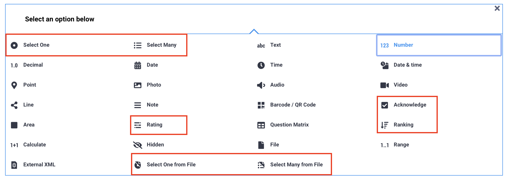
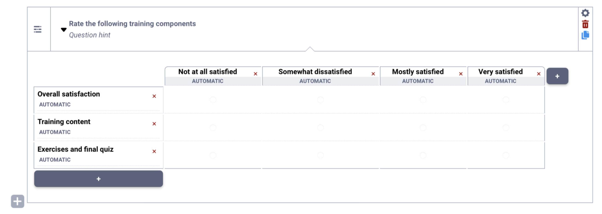
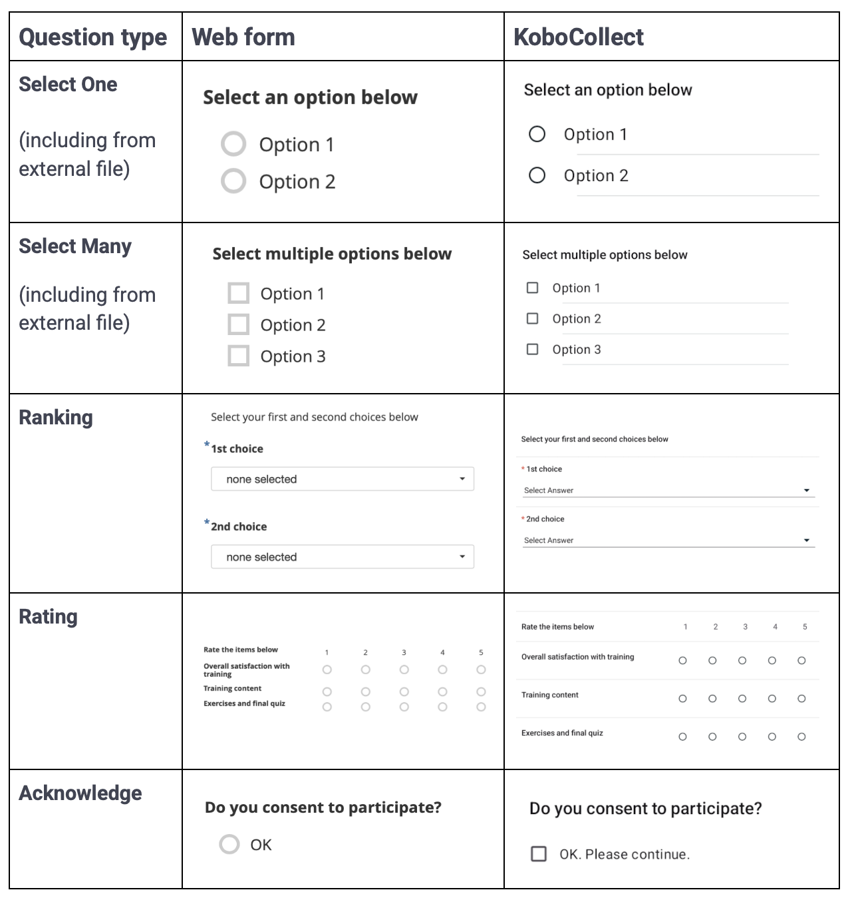
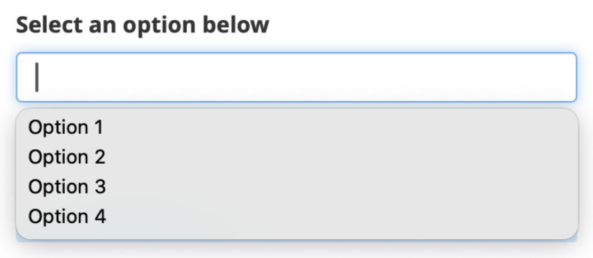
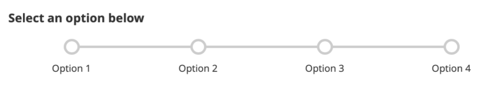
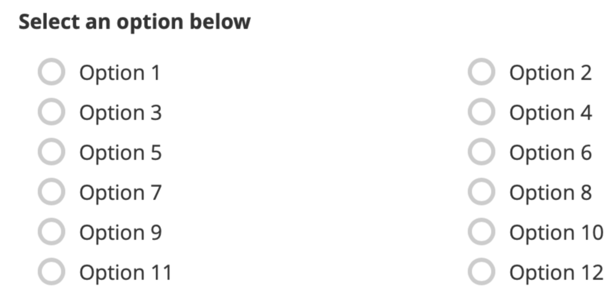

Busca en nuestra documentación, explora nuestros recursos y visita nuestro Foro de la Comunidad para obtener información más detallada
Última actualización: 23 Apr 2026
Las preguntas de selección permiten a los encuestados elegir entre opciones de respuesta predefinidas. Son útiles para estandarizar respuestas, mejorar la calidad de los datos y facilitar su limpieza, análisis y comparación.
Según tus necesidades, las preguntas de selección pueden usarse para elegir una o varias opciones, confirmar una declaración, ordenar elementos por rango, calificar elementos usando una escala común, o seleccionar opciones de un archivo externo.
Este artículo describe los diferentes tipos de preguntas de selección disponibles en KoboToolbox, explica cómo agregar preguntas de selección en el Formbuilder, describe las opciones de apariencia disponibles y señala consideraciones clave al usar estos tipos de preguntas.
Los siguientes tipos de preguntas están disponibles en el Formbuilder para que los encuestados seleccionen opciones:
Tipo de pregunta |
Descripción |
|---|---|
Seleccionar una |
Permite a los encuestados seleccionar una opción de una lista predefinida. |
Seleccionar varias |
Permite a los encuestados seleccionar múltiples opciones de una lista predefinida. |
Clasificación |
Permite a los encuestados ordenar elementos u opciones de una lista de opciones. |
Calificación |
Permite a los encuestados evaluar múltiples elementos usando la misma escala de respuesta. |
Consentimiento |
Permite a los encuestados confirmar su acuerdo con una declaración. |
Seleccionar una de un archivo |
Permite a los encuestados seleccionar una opción de una lista predefinida almacenada en un archivo CSV externo. |
Seleccionar varias de un archivo |
Permite a los encuestados seleccionar múltiples opciones de una lista predefinida almacenada en un archivo CSV externo. |
Para obtener más información sobre los tipos de preguntas Seleccionar una de un archivo y Seleccionar varias de un archivo, consulta Seleccionar opciones de archivos externos en el Formbuilder.
Para agregar una pregunta de selección a tu formulario:
Haz clic en el botón .
Ingresa la etiqueta de tu pregunta.
Haz clic en + AGREGAR PREGUNTA.
Elige el tipo de pregunta adecuado.
Ingresa las opciones de respuesta para la pregunta de selección.

Para obtener más información sobre cómo gestionar las opciones de respuesta para preguntas de selección en el Formbuilder, consulta Agregar preguntas con el Formbuilder.
Las preguntas de Clasificación se usan para pedir a los encuestados que ordenen elementos según su preferencia, importancia o secuencia.
Después de agregar una pregunta de Clasificación en el Formbuilder, configura los siguientes componentes:
Etiqueta de la pregunta: La instrucción general para la tarea de clasificación, por ejemplo: «Selecciona tu primera y segunda opción en orden de preferencia.»
Número de rangos: De forma predeterminada, la pregunta incluye solo una primera opción. Haz clic en el signo debajo del primer rango para agregar rangos adicionales. También puedes editar la etiqueta de cada rango.
Elementos a clasificar: La lista de elementos que los encuestados ordenarán. Haz clic en el signo debajo del último elemento para agregar más opciones.
Mensaje de restricción: Cada elemento solo puede seleccionarse una vez. Si un encuestado selecciona el mismo elemento más de una vez, aparece un mensaje de error que indica «Items cannot be selected more than once.» Puedes editar este mensaje de error predeterminado debajo de la lista de elementos.

Nota: Puedes incluir más elementos que rangos, pero el número de rangos no puede superar el número de elementos.
Las preguntas de Calificación se usan cuando tienes múltiples preguntas de Seleccionar una que comparten el mismo conjunto de opciones de respuesta, como una escala de «Totalmente en desacuerdo» a «Totalmente de acuerdo.»
Después de agregar una pregunta de Calificación en el Formbuilder, configura los siguientes componentes:
Etiqueta de la pregunta: La instrucción general para el conjunto de preguntas, por ejemplo: «Califica los siguientes elementos en una escala del 1 al 5.»
Filas: Los elementos, afirmaciones o preguntas individuales que los encuestados calificarán. Haz clic en el signo en la parte inferior de la tabla para agregar filas.
Columnas: Las opciones de respuesta que conforman la escala de calificación, como «Totalmente en desacuerdo» a «Totalmente de acuerdo.» Haz clic en el signo a la derecha de la tabla para agregar columnas.

La tabla a continuación muestra las apariencias predeterminadas para los tipos de preguntas de selección:

Nota: Los tipos de preguntas Clasificación y Calificación solo están disponibles en el KoboToolbox Formbuilder. Si estás creando formularios con XLSForm, la apariencia y el comportamiento del tipo de pregunta rank serán diferentes a la versión del Formbuilder. Para crear una pregunta de Calificación en XLSForm, agrega preguntas de selección con las apariencias label y list-nolabel.
Puedes aplicar apariencias avanzadas a las preguntas de Seleccionar una, Seleccionar varias, Seleccionar una de un archivo y Seleccionar varias de un archivo para modificar cómo se muestran y se comportan en tu formulario.
Para agregar una apariencia avanzada:
Abre la configuración de la pregunta haciendo clic en Configuración a la derecha de la pregunta. Esto te llevará a la ventana Opciones de pregunta.
En Aspecto (avanzado), elige la apariencia deseada.
Si la apariencia no aparece en la lista, selecciona other y escribe el nombre de la apariencia en el cuadro de texto, exactamente como se indica a continuación.

Las siguientes apariencias avanzadas están disponibles para las preguntas de Seleccionar una, Seleccionar varias, Seleccionar una de un archivo y Seleccionar varias de un archivo:
Apariencia |
Descripción |
Compatibilidad |
|---|---|---|
|
Muestra las opciones en un menú desplegable. |
Formularios web y KoboCollect |
|
Agrega una barra de búsqueda en la parte superior de la lista de opciones.  |
Formularios web y KoboCollect (combinar con la apariencia |
|
Muestra las opciones de respuesta como una escala Likert (solo Seleccionar una).  |
Formularios web y KoboCollect |
|
Muestra las opciones una al lado de la otra con un espaciado mínimo y sin casillas de selección visibles. El número de opciones por fila puede variar según la longitud de cada etiqueta de opción. |
Formularios web y KoboCollect |
|
Avanza automáticamente el formulario a la siguiente pregunta después de seleccionar una respuesta (solo Seleccionar una). |
Solo KoboCollect |
|
Muestra las opciones una al lado de la otra con un espaciado mínimo y sin casillas de selección, y avanza automáticamente a la siguiente pregunta después de seleccionar una respuesta (solo Seleccionar una). |
Solo KoboCollect |
|
Muestra las opciones en columnas de tamaño uniforme, con el mismo número de opciones en cada fila. |
Solo formularios web. Usa |
|
Muestra las opciones en columnas de tamaño uniforme, con el mismo número de opciones en cada fila. |
Formularios web y KoboCollect. |
|
Muestra las opciones en columnas con casillas de selección visibles. El número de columnas puede variar por fila según la longitud de cada etiqueta de opción. |
Solo formularios web. Usa |
|
Muestra las opciones en columnas con casillas de selección visibles. El número de columnas puede variar por fila según la longitud de cada etiqueta de opción. |
Formularios web y KoboCollect |
|
Muestra las opciones disponibles en el número (n) de columnas especificado.  |
Formularios web y KoboCollect |
|
Muestra las etiquetas de las opciones sin las casillas de selección. |
Formularios web y KoboCollect |
|
Muestra las casillas de selección de las opciones sin las etiquetas. |
Formularios web y KoboCollect |
Las siguientes recomendaciones destacan consideraciones importantes al usar preguntas de selección en tu formulario.
El tipo de pregunta Consentimiento permite a los encuestados indicar su acuerdo con una declaración mediante una única casilla de verificación. Sin embargo, este tipo de pregunta no distingue entre los encuestados que activamente están en desacuerdo y los que omiten la pregunta, lo que puede afectar la calidad de los datos. Además, la etiqueta predeterminada de la opción de Consentimiento no se puede editar.
Si necesitas más flexibilidad para etiquetar las opciones de respuesta, o si quieres incluir una opción clara de «No», usa una pregunta de Seleccionar una en su lugar.
Se recomienda definir los valores XML para todas las opciones en las preguntas de selección antes de implementar el formulario. Los valores XML garantizan la consistencia en tu conjunto de datos y evitan problemas durante la exportación y el análisis.
Para obtener más información sobre cómo definir valores XML, consulta Agregar preguntas con el Formbuilder.
Si las opciones predefinidas no cubren todas las respuestas posibles, puedes agregar una opción «Otro» seguida de una pregunta de Texto que permita a los encuestados especificar su respuesta. Usa la lógica de omisión para mostrar la pregunta de Texto solo cuando se seleccione la opción «Otro».
Para obtener más información, consulta Añadir lógica de salto al Formbuilder.
Para las preguntas de Seleccionar una y Seleccionar varias, puedes aleatorizar el orden de las opciones de respuesta yendo a Configuración > Opciones de pregunta > Parámetros de la pregunta y seleccionando randomize.
También puedes establecer una semilla (seed), lo que garantiza que la aleatorización siga un patrón consistente. Usar una semilla permite reproducir el mismo orden aleatorizado cuando sea necesario, por ejemplo al revisar envíos o probar el formulario, mientras se reduce el sesgo de orden durante la recolección de datos.
Para obtener más información sobre las opciones de preguntas, consulta Opciones de preguntas en el Formbuilder.
Al exportar datos de preguntas de Seleccionar varias, puedes elegir cómo se estructuran las respuestas en tu conjunto de datos. Puedes optar por:
Exportar todas las opciones seleccionadas en una sola columna
Exportar cada opción como una columna separada
Exportar ambos formatos
Para obtener más información, consulta Opciones avanzadas para la exportación de datos.
¿Encontraste lo que buscabas? ¿La información fue clara? ¿Faltaba algo?
¡Comparte tus comentarios para ayudarnos a mejorar este artículo!